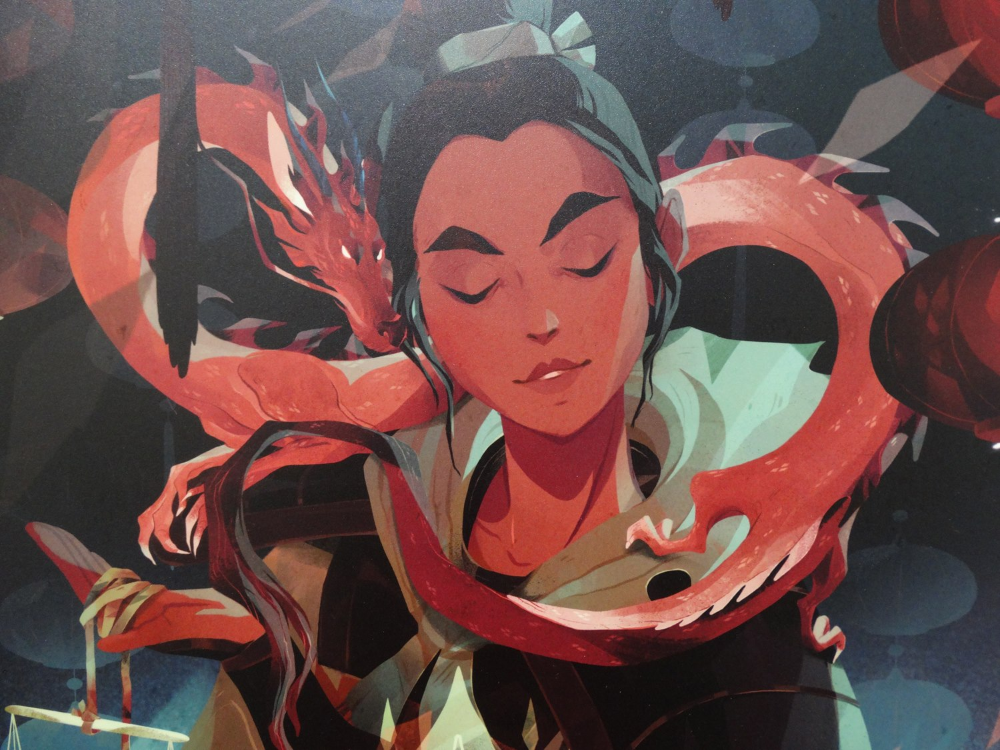

Fa Mulan

Fa Mulan is a character, inspired by an actual historic figure, who appears in Walt Disney Pictures' animated feature film Mulan (1998), as well as its sequel Mulan II (2004). Her speaking voice is provided by actress Ming-Na Wen, while singer Lea Salonga provides the character's singing voice. Created by author Robert D. San Souci, Mulan is based on the legendary Chinese warrior Hua Mulan from the poem the Ballad of Mulan. The only child of an aging war veteran, Mulan disregards both tradition and the law by disguising herself as a man in order to enlist herself in the army in lieu of her feeble father.
You can find more content about Fa Mulan here.